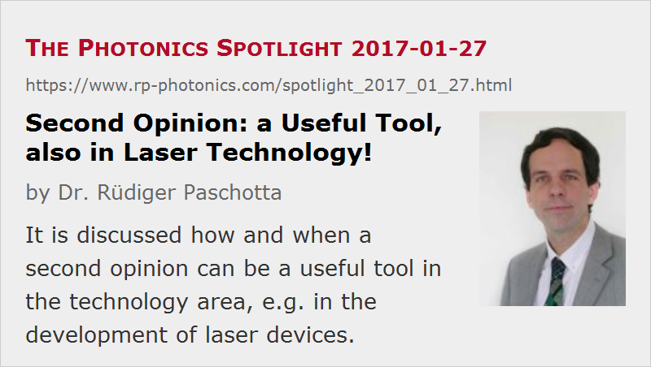

Second Opinion: a Useful Tool, also in Laser Technology!
Posted on 2017-01-27 as a part of the Photonics Spotlight (available as e-mail newsletter!)
Permanent link: https://www.rp-photonics.com/spotlight_2017_01_27.html
Author: Dr. Rüdiger Paschotta, RP Photonics Consulting GmbH
Abstract: It is discussed how and when a second opinion can be a useful tool in the technology area, e.g. in the development of laser devices.

If you have a health problem and you are told that you need some serious medical surgery, for example, you may often want to have a so-called second opinion before making a definite decision. This means that you get the opinion of another doctor, who might be able to suggest a better treatment – e.g. with better results, lower risks or lower cost – or might even arrive at a different diagnosis.
This approach can actually also be very useful when you have to make decisions on technology. Some examples for such situations:
- You may want to develop a laser which meets certain specifications, but you are not sure which technical approach will be the best one.
- You may have certain problems with the laser and need to decide on a way to fix those problems.
- Your development team may have told you that certain things cannot be achieved. You then would like to be sure whether this is true or not; they may have overlooked some attractive solution.
Just as in medicine, such decisions can be risky concerning the obtained quality of results, expenses and resulting time delays, for example. And it may well be found that somebody overlooked a nice solution or a nasty problem to be encountered. Often, the cost and time required to get a second opinion is far lower than the cost and risk for just trying out certain solutions.
Different Forms of Second Opinion
One way of getting a second opinion is just to let a second person or team do the same job again (or in parallel) – for example, work out a laser design. Thereafter, you can compare the results and take the one which appears to be better. The disadvantage, of course, is that the cost for working out the design is doubled. You may feel that you are throwing away half of the obtained results. In some cases, that is still worthwhile, e.g. if fabrication will anyway be much more expensive than finding the original design. And often one can combine results in order to obtain an overall better solution.
However, one can also have a second expert only for inspecting the results worked out by others, hoping to get useful comments. For example, the second expert may find errors in the analysis which should be corrected, or may have a cute idea how to do something better. Then you can feed that information back to the original people, enabling them to find a better solution. The nice thing about that approach is that it takes an expert much less time just to think about existing results than doing everything from scratch. So the second opinion will cost much less than the work to be checked, and you can get it quickly. On the other hand, there is the risk that by working on the results of others one gets on a certain mental track which may distract one from a better route.
For that second approach, the work to be checked should of course be properly documented. That, however, should be done anyway: after all, it is a waste of time to do some work and end up with nothing real, or something which is easily lost just by waiting a couple of weeks. Also, when carefully writing down results, one often stumbles across interesting details, and that may enable one to correct or improve results.
At Least Think about it!
Of course, a second opinion may not always be required. However, one should at least consider (and possibly discuss) that before making important decisions. After all, it does not take much to consider that option; you can't lose much, but possibly it will help you to find a better solution or even to avoid huge trouble.
A psychological difficulty may be that someone feels uneasy about having his results checked or compared with those of others. Of course, that is not really a good reason for working without a second opinion.
Often, a second opinion can be obtained only from an external expert, e.g. simply because the team itself is too small, or because the insiders are too much on the same mental track. Personally, I am often happy to offer a second opinion on something in the area of laser technology, for example. Although it means that I don't earn much money, since the time spent is quite limited (often only half a day or so), I feel that this is a particularly useful and efficient kind of work, which I like. And knowing how to respectfully communicate the results, I am not afraid to get into awkward situations. Often it is no problem at all in a group of engineers or scientists to establish an open, fruitful and respectful style of communication, which is not only pleasant but also gives the best chance for good results.
This article is a posting of the Photonics Spotlight, authored by Dr. Rüdiger Paschotta. You may link to this page and cite it, because its location is permanent. See also the RP Photonics Encyclopedia.
Note that you can also receive the articles in the form of a newsletter or with an RSS feed.
Questions and Comments from Users
Here you can submit questions and comments. As far as they get accepted by the author, they will appear above this paragraph together with the author’s answer. The author will decide on acceptance based on certain criteria. Essentially, the issue must be of sufficiently broad interest.
Please do not enter personal data here; we would otherwise delete it soon. (See also our privacy declaration.) If you wish to receive personal feedback or consultancy from the author, please contact him e.g. via e-mail.
By submitting the information, you give your consent to the potential publication of your inputs on our website according to our rules. (If you later retract your consent, we will delete those inputs.) As your inputs are first reviewed by the author, they may be published with some delay.
|  |
If you like this page, please share the link with your friends and colleagues, e.g. via social media:
These sharing buttons are implemented in a privacy-friendly way!